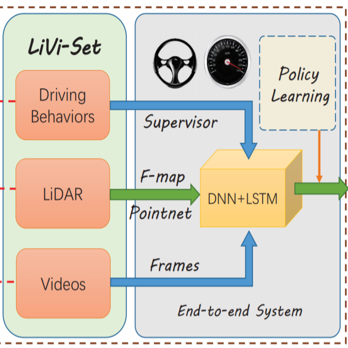
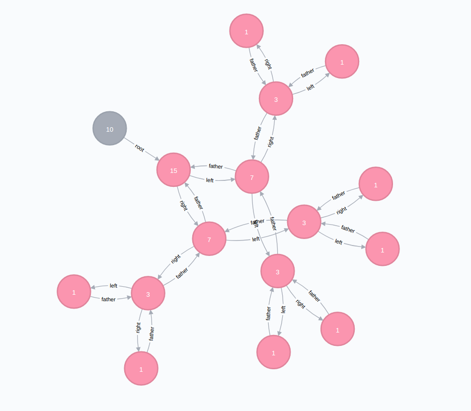
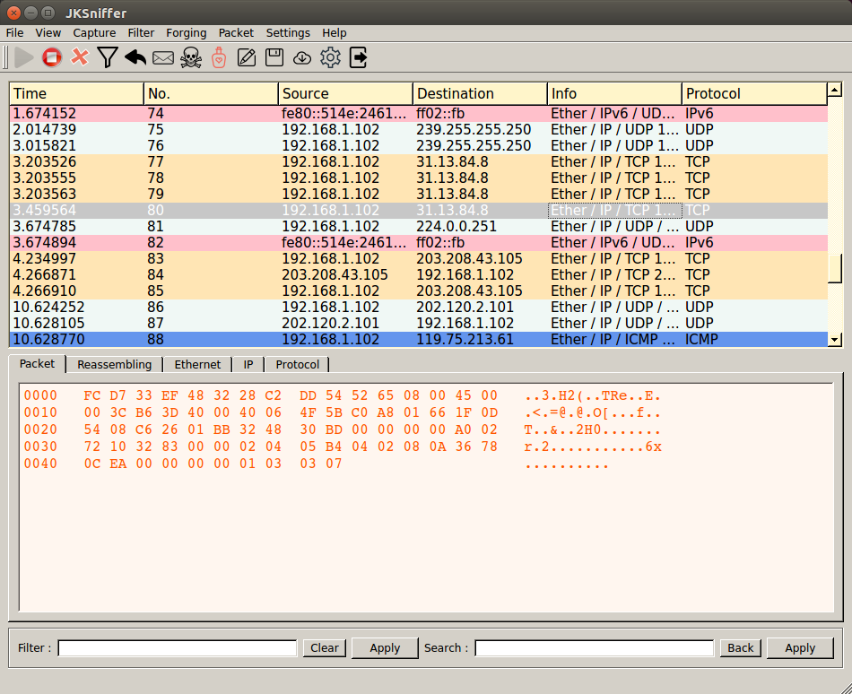

|
Jingkang Wang （王靖康）
E-mail: wangjksjtu@gmail.com
Phone: (+86) 158-2117-0337
School: Shanghai Jiao Tong Univerisity (SJTU)
Email /
CV /
GitHub /
LinkedIn
|
|
|
Biography
I am a junior undergraduate student in Information Security, Shanghai Jiao Tong University. Currently,
I work as a research assistant at Machine Vision and Intelligence Group (MVIG) in CS,
directed by Professor Cewu Lu, and I am also supervised by Associate Professor
Gongshen Liu and Lei Fan in School of Cyber Security.
Currently, I am a research intern under the supervision of Professor Bo Li and Dawn Song at UC Berkeley.
During internship, I do some exploration on graph models and adversarial examples.
I am applying for Ph.D. programs which start from Fall 2019. My research interests involove computer vision, deep learning and security.
|
|
Education
Shanghai Jiao Tong University, China
B.E. in Information Security
(School of Cyber Security in SEIEE)
Sept. 2015 to June. 2019 (Expected)
GPA: 91.6/100 (2/98)
|
|
|
Scholarships
National Scholarships (Top 2%)
Level-A SJTU Outstanding Scholarships (Top 1%)
Yitu Technology Scholarship
|
|
Awards
First Prize in National College Students
Information Security Competition
Meritorious Winner Prize of Mathematical Contest in Modeling
Second Prize in The Chinese Mathematics
Competition (Shanghai)
Second Prize in National College Students
Information Security Competition
SJTU Excellent League Cadres
First Prize in National Mathematical Olympiad in Senior (10th in Shanxi)
|
|  |
LiDAR-Video Driving Dataset: Learning Driving Policies Effectively
Yiping Chen*, Jingkang Wang*, Jonathan Li, Cewu Lu, Zhipeng Luo, Han Xue, and Cheng Wang (* equal contribution)
IEEE Conference on Computer Vision and Pattern Recognition (CVPR), 2018
[paper]
[code]
[dataset]
We build a large-scale dataset for autonomous driving policy learning, which provides high-quality point clouds, videos and drivers' behaviors.
|
|  |
DSSE-GraphDB: Dynamic Searchable Symmetric Encryption System Based on Graph Database
Jinrui Sha, Jingkang Wang, Yijun Leng and Weihong Lin, 2017
We simplified and improved the original algorithm proposed by Seny Kamara and proposed several additional policies to enhance security of a system.
Improved algorithm was implemented utilizing Neo4j Graph Database and successfully validated based on large-scale ciphers. Our work finally got
a Second Price at Final. In this project, I was in charge of the back-end implementation of algorithm based on the Neo4j.
|
|  |
JKSniffer: An implementation of Sniffer Tool using Python
Jingkang Wang and
Yedi Meng, 2017
It was assigned in IS301 (Computer Communication and Network). We used Python to implement a Sniffer Tool,
which was involoved in packet capturing, parsing, sending, filtering, searching, IP fragmentation and reassembly, IO (pcap, pdf),
ARP poisoning, and GUI.
|
|
SuperAlarm: An android app for Deadline Management
Jingkang Wang, Lin Wang, Jie Ni, Jilai Zheng, Lei Wang,
Jinrui Sha and Linbo Yang, 2016
It was assigned in SE407 (Software Engineering). We tried Scrum
to finish a APP development in two month, during which we not only study coding skills but learn how to work as a team.
I also learn how to be a qualified leader and how to cooperate with team members.
|
|